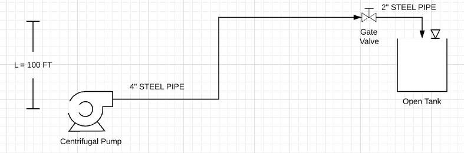

Code Examples and Tutorials¶
Pipe Class Examples¶
The Water.Pipe class allows you to create a pipe object to apply flow calculations. It is useful to start at a pump and create your pipe objects based on pipe size and/or material. You can add fittings to each pipe object and calculate the major and minor losses through the pipe based on flow.
- Example #1: Calculating the losses from a pump’s discharge through a pipe network consisting of the following fittings:
- 90 degree elbow, quantity 2
- through-tee, quantity 1
- branch-tee, quantity 1
- gate valve, quantity 1
The pipe is 4-inch schedule 40 steel pipe and 60 ft long.
1 2 3 4 5 6 7 8 9 10 11 12 13 14 15 16 17 18 | from Water import Pipe
# assign the flow you want to analyze in gallons per minute
flow = 300 # gpm
# create the pipe object
pipe_1 = Pipe(length=60, size=4, kind='STEEL', sch=40)
# add fittings to the pipe object
pipe_1.fitting(fitting_type='elbow_90', con_type='standard_threaded', qty=2)
pipe_1.fitting('tee_through', 'standard_threaded', qty=1)
pipe_1.fitting('tee_branch', 'standard_threaded', qty=1)
pipe_1.fitting('valve', 'gate', qty=1)
# apply the get_losses function to compute head loss
losses = pipe_1.get_losses(flow)
print('head loss at {} gpm = {:.2f} ft'.format(flow, losses))
|
>>> output: head loss at 300 gpm = 5.60 ft
You can get a list of fittings in the pipe object by using the Pipe.fitting_info() method.
>>> print(pipe_1.fitting_info())
Fittings list:
elbow_90, standard_threaded: Kvalue = 0.899, qty = 2
tee_through, standard_threaded: Kvalue = 0.225, qty = 1
tee_branch, standard_threaded: Kvalue = 1.124, qty = 1
valve, gate: Kvalue = 0.275, qty = 1
Example #2: Building from example #1, this is an example of finding the Total Dynamic Head for a pipe network consisting of a pump, pipe and fittings, and a tank at an elevated location.
from Water import Pipe
# assign the flow you want to analyze in gallons per minute
flow = 300 # gpm
L = 100 # ft
# create the 2 pipe segments in the pipe network
pipe_1 = Pipe(length=60, size=4, kind='STEEL', sch=40)
pipe_2 = Pipe(length=20, size=2, kind='STEEL', sch=40)
# add fittings to the pipe segments
pipe_1.fitting(fitting_type='elbow_90', con_type='standard_threaded', qty=2)
pipe_1.fitting('tee_through', 'standard_threaded', qty=1)
pipe_1.fitting('tee_branch', 'standard_threaded', qty=1)
pipe_1.fitting('valve', 'gate', qty=1)
pipe_2.fitting('elbow_90', 'standard_threaded', qty=2)
# apply the get_losses function to compute major and minor losses
losses = pipe_1.get_losses(flow) + pipe_2.get_losses(flow)
TDH = L + losses
print('Size Pump for {} gpm at {:.0f} feet of Head'.format(flow, TDH))
>>> output: Size Pump for 300 gpm at 153 feet of Head
Pump Class Examples¶
The Water.Pump class allows you to create a pump class to help in sizing a pump. The Water package has includes a database of pumps that you can add to. Once pump data is loaded into the pump object you can plot it’s pump curve.
Example #1 Load existing pump data into the a pump object and plot it’s curve.
1 2 3 4 5 6 7 8 9 10 11 12 | from Water import Pump
# design parameters
FLOW = 100 # gpm
TDH = 111 # ft head
# define pump object and load pump data
pump_1 = Pump()
pump_1.load_pump('Goulds', '3657 1.5x2 -6: 3SS')
# plot curve without affinitized curves and with efficiency curve
pump_1.plot_curve(target_flow=FLOW, tdh=TDH, vfd=False, eff=True, show=True)
|
Example #2 Load new pump data into database, create a system curve and plot affinitized pump curve with the system curve.
1 2 3 4 5 6 7 8 9 10 11 12 13 14 15 16 17 18 19 20 21 22 23 24 25 26 27 28 29 | import numpy as np
from Water import Pump
# create a pump object
pump_2 = Pump()
# define new pump parameters as a dictionary
new_pump_data = {
'model' : 'BF 1-1/2 x 2 - 10',
'mfg' : 'Goulds',
'flow' : [0, 50, 100, 150, 200, 250],
'head' : [400, 400, 390, 372, 340, 270],
'eff' : [0, 0, 0.49, 0.56, 0.60, 0.54],
'bep' : [200, 340],
'rpm' : 3500,
'impeller' : 9.1875
}
# add pump to database, this will load the parameters into the object variables as well
pump_2.add_pump(**new_pump_data)
# create system curve
system_flow = np.linspace(1, 220, 20)
system_head = []
for flow in system_flow:
system_head.append(220 + 20*np.exp(-1/(flow*.005)))
# plot curve with system curve
pump_2.plot_curve(system_flow, system_head, show=True)
|